开车时遇到8种驾驶场景，必须第一时间备刹，预防事故的发生
开车时看到8种现象，第一时间就要将右脚虚放刹车踏板，随时准备刹车，今天就来说一说，希望对你有帮助。
与大车会车前，发现大车后边跟了一辆电瓶车，那么我们与大车会车时就要进入备刹状态，预防大车后边的电瓶车突然拐过来横穿马路。
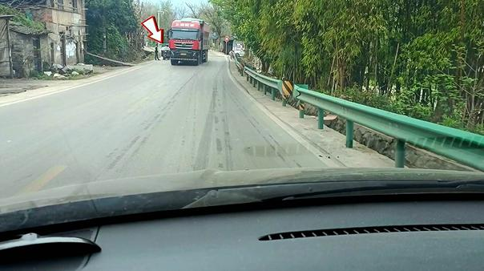
发现前方地上出现菱形标志，就说明在前方三五十米有人行横道，那么就要提前收油，随时备刹，预防有人突然出现在斑马线上。
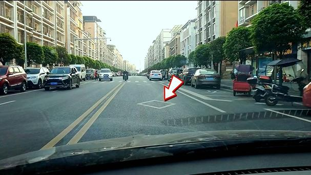
经过斑马线时发现路边有行人，那么也要随时备刹，一是防备有人突然跑出来，躲避不及而撞上。二是预防有人突然走到斑马线上，我们没有停车礼让，就会被罚款扣分。
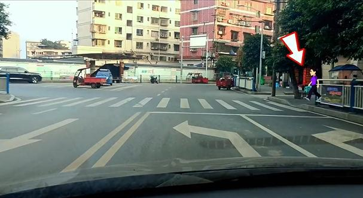
行驶过程中，发现前车的前车亮了一下刹车灯，那么我们就要第一时间备刹。如果发现前车的前车的刹车灯一直亮着，那么我们就要踩刹车跟着减速了，以防前车突然急刹，我们到时候就可能刹不住而追尾。
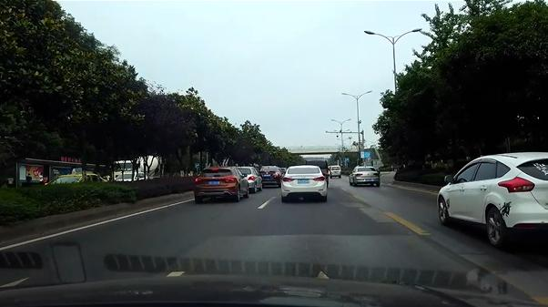
发现路边停了一排的车，那么第一反应就要收油门备刹，以防车辆间隙里突然有人或者电瓶车窜出来，发生鬼探头事故。
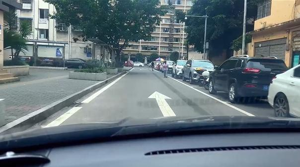
虽然在路口右转，不受圆形信号灯控制，无论红灯还是绿灯都可以右转，但是当圆形灯是绿灯时，很多时候右边车道的人行信号灯也是绿灯，那我们这个时候右转，就要随时备刹，如果右转过去后发现斑马线上有行人，就要刹停在斑马线前礼让。
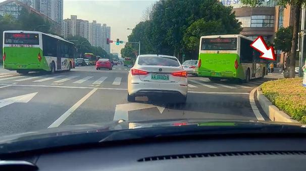
发现前方路边有小孩，无论有没有大人牵着，都要马上备刹。小孩在路上发生最多的事故，就是突然的冲锋，让人防不胜防，遇见了千万要注意。
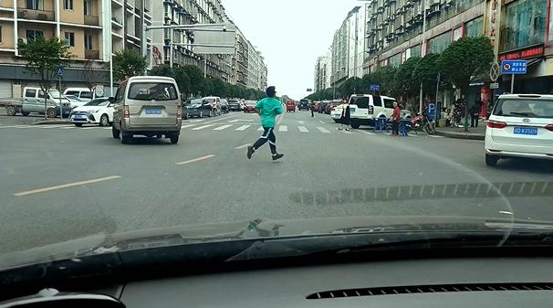
发现前方路口有盲区，比如一旁有房屋，或者有树木，那么经过时第一时间就要备刹减速，在这种有盲区的路口发生的事故非常多，经过时，第一反应就必须要有这备刹减速的意识。
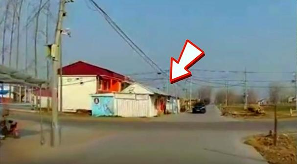
当然，需要备刹的驾驶场景，远远不止这8种，以后再慢慢总结给大家，如果今天的内容对你有帮助，别忘了点赞支持一下，谢谢！
1 复杂路况与行人区域
人车混杂路段（如老城区街道、菜市场周边）需保持警惕，行人可能突然改变方向或横穿马路，备刹可缩短反应时间。
2 倒车与变道操作
倒车时需将脚放在刹车上，通过控制车速避免碰撞障碍物；变道前需观察后方车辆动态，随时准备制动。
3 路口与视线盲区
经过路口、公交车站或被车辆遮挡的路段时，可能发生“鬼探头”事故，需提前减速并备刹。
4 跟车与前车异常
跟随大型车辆（如卡车）时需注意其盲区，若前车突然减速或刹车灯亮起，需立即减速备刹。
前车有变道意向时。
5 窄路与儿童活动区
乡村窄路、学校周边等儿童易出没区域或巷道行驶时，需降低车速并随时准备制动，避免小孩突然冲入车道。
6 信号灯路口
绿灯通过路口时需留意其他方向闯红灯的非机动车，临近路口时主动减速备刹。
7 障碍物遮挡路段
路边停放车辆或建筑物形成的盲区区域，需将右脚移至刹车踏板上方，观察确认安全后再通过。
8 前挡风玻璃出现返光、逆光现象时。
一、不超齐头车
这种情况在城市的非十字路口的人行横道处非常常见，就是一条简单的过街人行道。
我所在的城市在过街人行道前设置了红绿灯，这个红绿灯比较特殊，从机动车的角度看，如果是绿灯，机动车就能过，但如果有行人在走，还是要避让的。
如果没有行人在走，哪怕是红灯，机动车也能通过。
不超齐头车
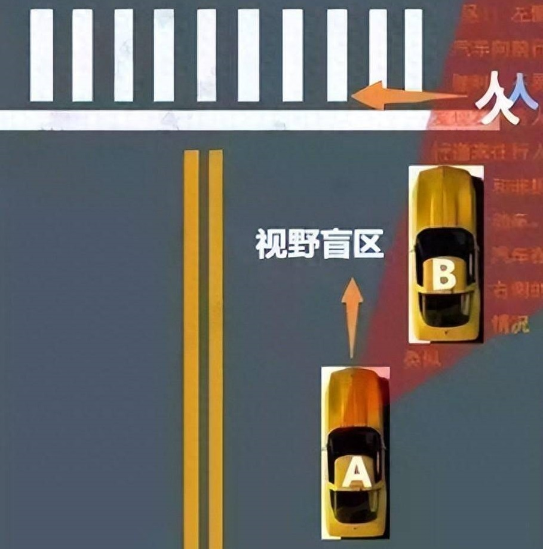
当前方有一排车辆停车并等待行人经过时，后面上来的车被前面车辆挡住了，可能看不到人行道上的情况。
如果旁边有一条空的车道，千万不要随便超过去，这个时候很容易出现鬼探头。
正确的做法就是跟那些停车等待的车辆一样先停在那里，再观察一下人行道上有没有行人，如果没有行人，再谨慎通过。
在一些偏僻的没有红绿灯的路口，也会遇到这种情况，前面一排齐头车在等待什么，你就不要贸然超车，很容易鬼探头。
很多年前我遇到一起事故，前方是T字路口，我在主干道上直行，前方有一辆小车停在路口处等待，小车没打转向灯，路口里面有一辆摩托车左转弯出来。
小车被大车挡住视线
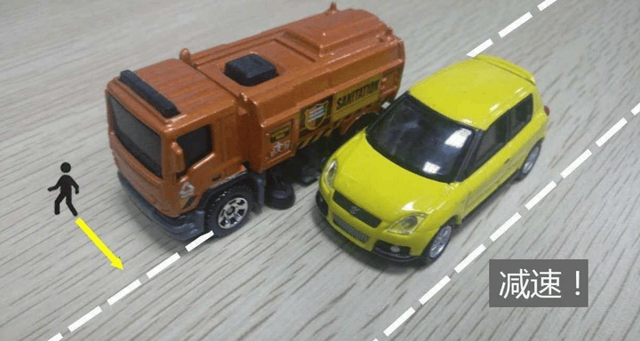
我在小车后面，当时急着赶路，没想太多，就从小车左边超过去，结果与摩托车发生刮蹭，幸好速度不快，没大问题，这就是典型的鬼探头。
二、经过被遮挡的路口
开车过程中，难免会遇到一些特殊的路口，路口内部的路况都被房屋、树木、广告牌等东西挡住，很容易遇到鬼探头。
开车经过这种路口，因为看不到路口内的路况，首先必须减速，其次要观察路口有没有行人、非机动车或者机动车冲出来。
经过这种路口，都是松油着，右脚放在刹车踏板之上谨慎通过，遇到危险随时踩刹车。
开车经过路口小心鬼探头
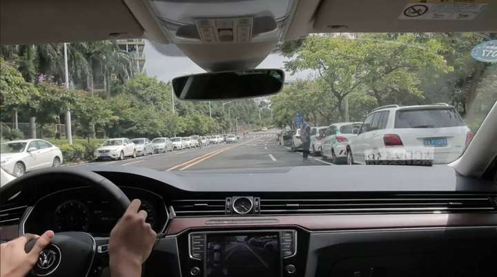
三、红绿灯前
红绿灯前，如果你排第一位，绿灯亮后，同方向其它车道的车辆都不动，你就要仔细观察了。
尤其是旁边车道的车非常高大的情况，比如旁边车道是面包车、高大的SUV、MPV、公交车、大货车，左右两边的视线完全挡住了。
即使绿灯了，也不要第一个冲过去，要观察左右路况，直到确认安全再走。
因为即使绿灯亮了，总有行人和非机动车还在慢慢过人行道，你如果没看到，就会变成鬼探头。
任何时候开车，一定要有百分之百的把握看到路况后才开，如果视线被挡住，建议都不要走，或者小心观察后低速离开。
人行道前小心鬼探头
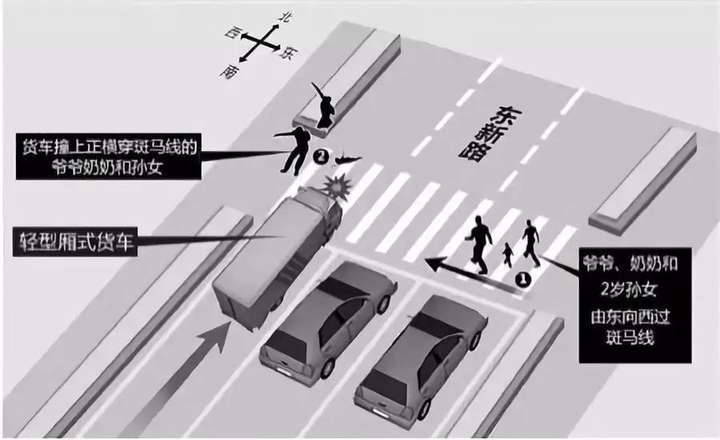
四、经过连续排队的一长串车辆
在一些特殊的路段，比如左转车道排着长长的队伍，但直行车道却是空的，一辆车也没有。
有些人在开车经过这样的地方，会加速通过。
在这种条件下，会有行人或者非机动车先横穿马路，再从左转车道两辆车之间的间隙钻出来，如果空旷的直行车道开得很快，就容易发现不了这些横穿马路的行人和非机动车，这就是鬼探头。
因为直行车的视线被左转车道的一排车挡住了，很可能会看到。
开车经过这样的路段，就必须关注前方侧面路况，同时速度不能太快，左边如果有行人或非机动车窜出来，眼角的余光是会看到的。
而且机动车在不断行驶过程也在变换位置，总有一个角度能看到，这就要求司机在预判并提前防范。
经过连续排队的车流遇到鬼探头
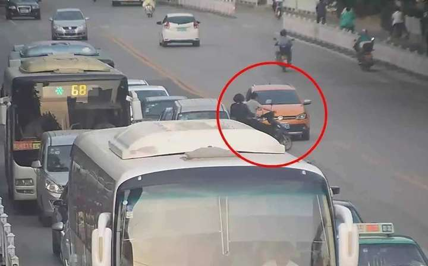
还有一条情况是道路两边或一边都停满了车，突然有人行人车缝之中冲出来，造成突然的鬼探头，开车经过这种路，车速一定要低于30公里/小时，而且随时保持谨慎。
五、经过公交车
在开车经过公交车站时，经常会有一些公交车停车上下客，因为公交车的体型大，很容易遮挡司机视线。
总有一些乘客是从公交车车头走出来的，行人行走的速度一般不会太快。
经过公交车时，首先应该减速，车速保持在40公里/小时以下，甚至更低。
然后要谨慎观察右前方，防止出现行人突然跑出来，这种鬼探头只要司机谨慎，一般不容易发生事故。
经过公交车遇到鬼探头
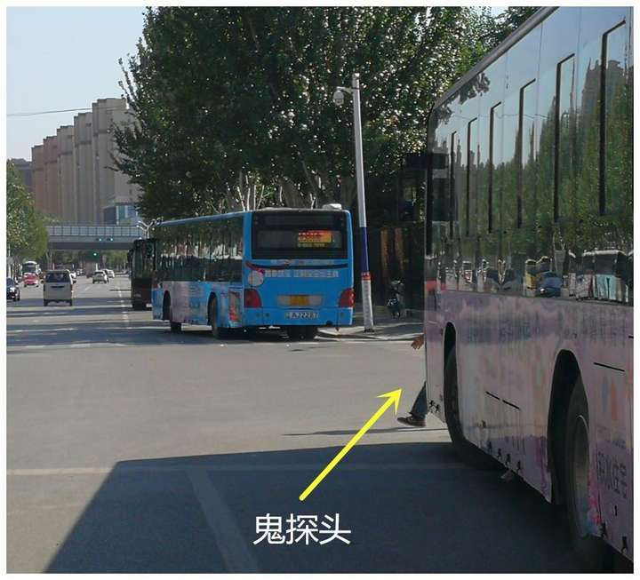
所有鬼探头事故都有一个特点：司机在开车经过一些地方时，眼睛没能看到全部的路况，就凭运气地贸然通过。
因此防范鬼探头的原则就是：你看不清楚的路况，就不要走，宁停三分，不抢一秒，百分之百看清楚了路况，就能走。